- Loging
- Landing Page
- User Management
- Upload/Query
- Fundamental
- General Query
- News
- Insider
- Declaration & Gift
- Periodicals
Loging
-
How do I loging?
For logging in Issuers:
1. The URL : https://bpm.dse.com.bd
2. Recommended Browser : Microsoft Edge. Use the latest version of the browser for best user experience.
3. Recommended Bandwidth : 10 MBPS. Minimum 5 MBPS required.
4. Input valid username and password
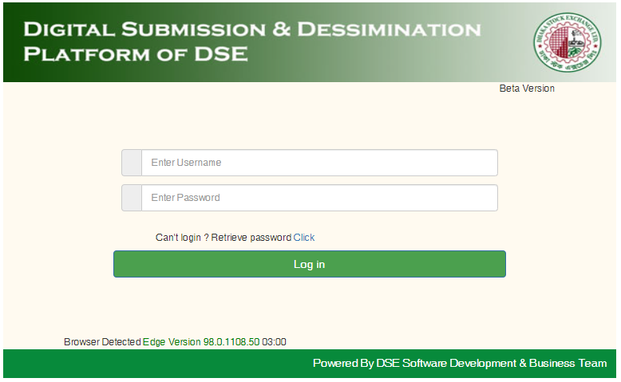
-
How to get the OTP?
After providing the correct username and password, an OTP will be sent in the mail or the phone associated with the user. The code has to be entered for logging in.
Default OTP is 12345 for testing purposes only.
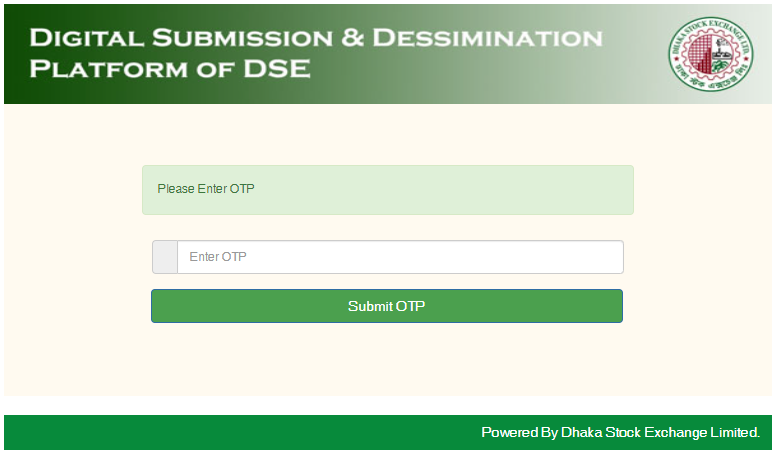 -
How to retrive password
The password can be recovered if forgotten. When the button is clicked the user will be directed to a page like the image below. Then the user has to provide the username and the email address and check the checkbox of the Captcha. A link for resetting the password will be sent in the mail. The link in the mail will be validated for 30 minutes. If 30 minutes is passed before resetting, the user has to provide username and password here again for a new link.

The user is recommended to provide the correct email and phone number during user creation as the reset link and OTP will be sent in email or phone for security measures. Without the OTP, the user will not be able to log in. -
Where is the facebook link?
Our facebook link is at our BPM loging page

Landing Page
-
What do I see after logging?
After logging in, the sidebar menu and the surveillance window will be shown.
1. Sidebar menu
2. Surveillance table
3. Top-bar menu

-
What is Sidebar menu?
Sidebar menu contains all the module buttons. The buttons are Home (Fundamental, Query, User Management), Report, News (News All, Add New News), Insider (Company Insider, Insider Relatives (Without BO)), Declaration & Gift, Declaration Confirmation and Periodicals.
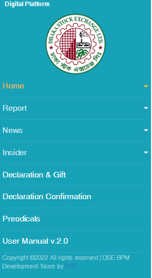 -
What is Survellance Table?
All kinds of requests or activities are displayed in this table. If any news is created or any query is sent from DSE etc will be listed here.
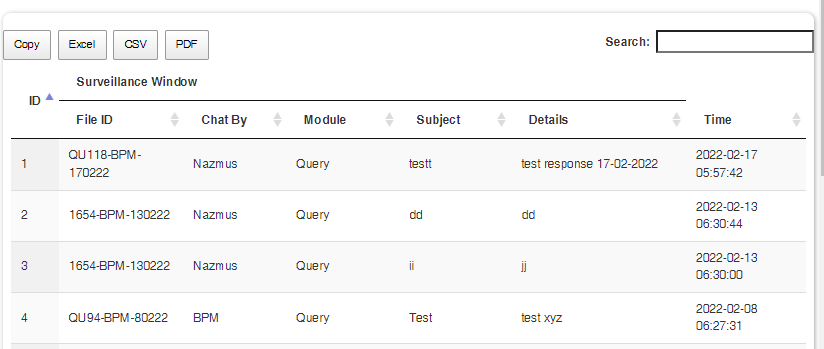 -
What is Top-bar Menu?
There is a top-bar menu which includes the buttons :
I. Module buttons (Home, General Query, Fundamental, News)
II. User Profile
III. Copy and Download information
IV. Search
V. Logout
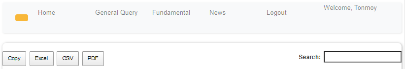Search
Users can search the requests from the surveillance table by using any keyword like the “Tracking Code”, title, status etc. of any file and the filtered list will be shown.Copy or Save Information
Users can copy information by clicking the ‘copy’ button in the upper left corner. Also the information can be downloaded as excel, csv and pdf files.Logout
Users will logout after performing the tasks.User Profile
1. Users can view his profile details by clicking on ‘welcome’ in the top-bar menu. The detail includes login id, Name, Company, Designation, E-mail, Phone and Access Status in different modules. The access status shows the permissions that the user has for different modules.
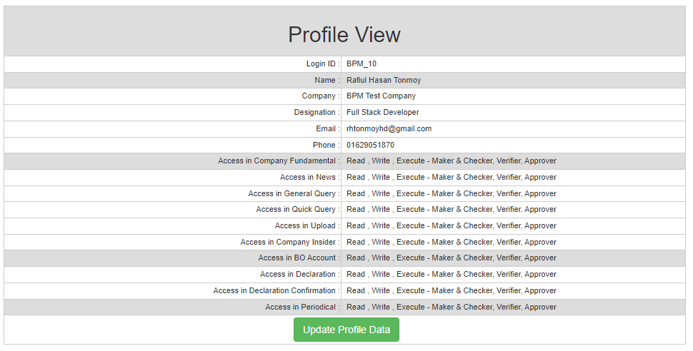
2. Users can update personal Information. But permissions cannot be updated from here.
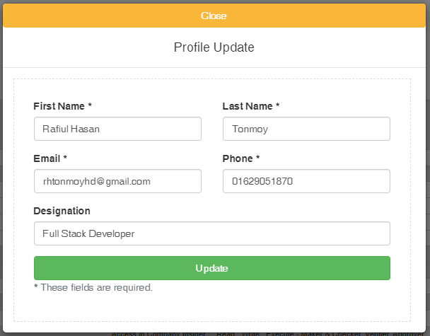
User Management
-
What is ADMIN user?
Initially, DSE will provide each company with an Admin login ID. The ID will be the Trade Code of the company. While logging in for the first time, the admin has to set his password in the same way as “Forgot Password” as described in the Login section. After setting the password the admin can log in. Only Admin will have access to the User Management module and he will only add/ update user’s profiles and grant them module permissions Admin can also active / Inactive users if needed. We strongly recommend that the admin will be prohibited to access other modules. Admin may not able to perform a full operation on other modules.
-
Features of User Management?
In this “User management” module the user can see the created user by DSE and they can edit the information and reset the password as per requirement.
Module Features :
1. User List table
2. Select columns of the table
3. Create new user
4. View details of a user
5. Search user by name or ID
6. Reports download multiple format
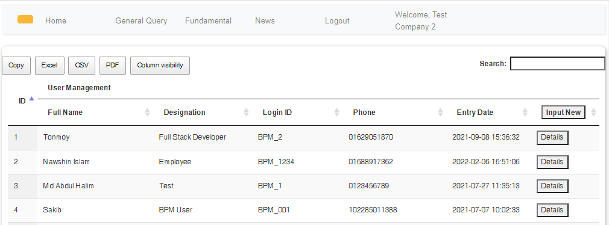 -
How to create new user?
Go to User Management then click on Input New Button
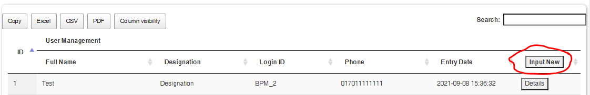
A new user can be created providing required information. Permissions to access different modules need to be granted from here.
Username format: TRADECODE your choice for login id. By default, TRADECODE with underscore will add as prefix automatically. E.g. EBL_1 you should input only 1 for creating a user ID.
The permissions are Read, Write, Execute, Check, Verify and Approve. The permissions are incremental. For example, if ‘Write’ permission is given then ‘Read’ permission is auto granted. So if the user is given ‘Approve’ permission, then he has all permission granted.
There is an option to select ‘Active’ or ‘Inactive’ for the user. If ‘Inactive’ is selected, the user will be inactive and he will not be able to log in anymore.
Only the Admin (the user created by DSE) will have the authorization to create a user. When logged in as a company user, he will not have access to User Management. An error message will be displayed.
Reset the new user password.
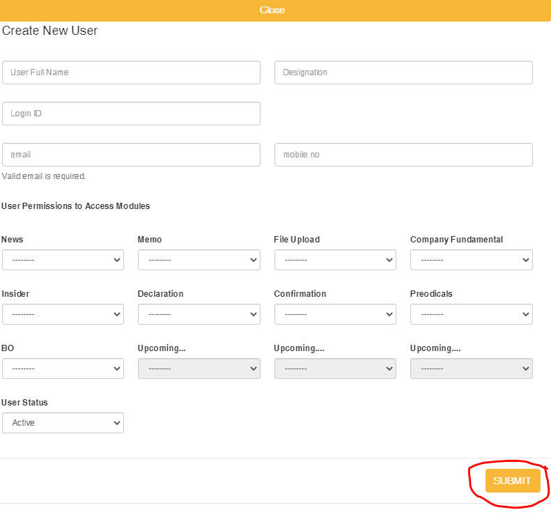 -
How to inactive a user?
Go to User management then click on Details Button. It will pop-up Details View
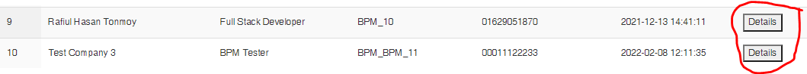
Click on Edit. It will pop-up Update User
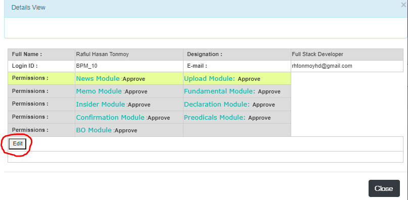
Now from the User Status option select ‘Active’ or ‘Inactive’ for the user. If ‘Inactive’ is selected, the user will be inactive and he will not be able to log in anymore.
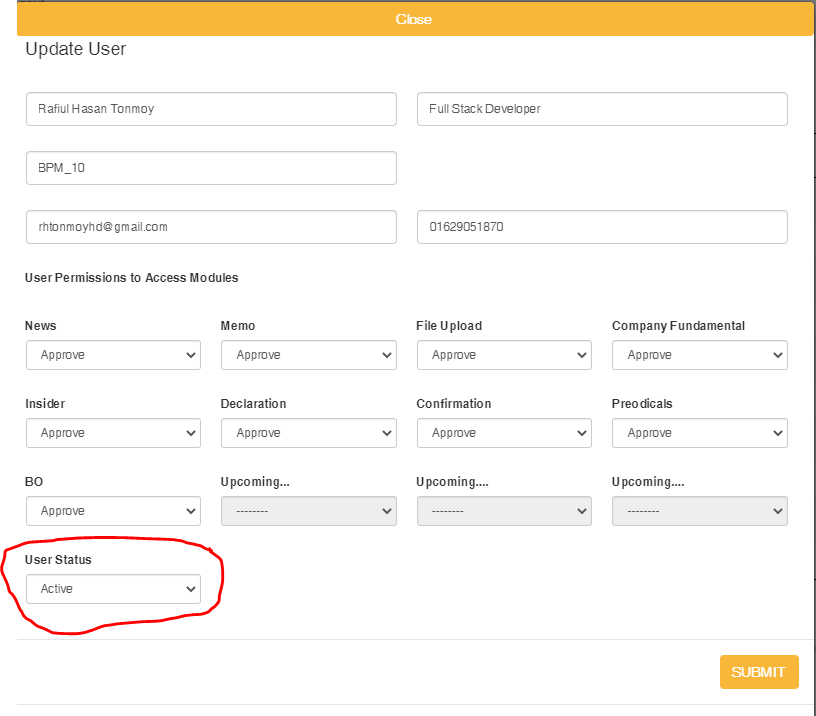 -
What are the Permissions?
● Read : Users can only view data.
● Write : Users can create entries e.g News entry. They cannot delete any files.
● Execute : Users can view, input information and upload or delete files.
● Check : Users can view, input information and upload or delete files. They can also check.
● Verify : Users have the authority to verify any entry.
● Approve : This is the highest level of permission. Users can read, write, execute, check, verify and approve any entry.
Upload/Query
-
How to Upload a file?
The documents associated with a particular entry of a module can be uploaded from here after the entry has been created.
1. Files can be chosen from the device. Only files in the pdf format can be chosen.
2. The chosen files can be uploaded clicking the ‘upload’ button.
3. Uploaded files can be viewed in this section.
4. Uploaded files can be marked and deleted as long as the entry is not approved. After approval, the delete button will be disabled.
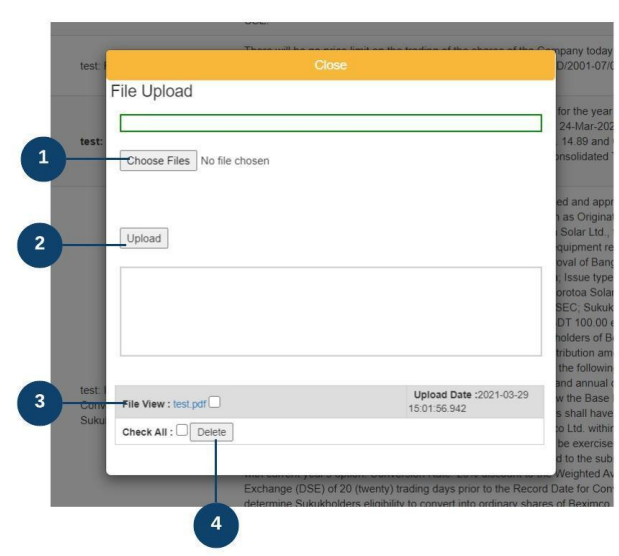
● The upload date and time of each file will be visible with the files. There is a checkbox with each file so that it can be selected to delete.
● ‘Check All’ checkbox will select all files in order to delete.
● Once the entry is approved from DSE, files cannot be uploaded anymore.
-
How to send Query?
Issuer and DSE can send queries regarding any entry. All queries will be displayed in the box.
1. Select query category
2. Enter the subject
3. The body of the message
4. ‘Submit’ button will submit the query.
5. Refresh button will refresh the queries so that all queries are shown in the table below
6. The table for showing all queries

1. The categories - AGM Issue, EGM Issue, Others, Uploaded File Not Appropriate, Uploaded File Not Available.
2. Already submitted queries are shown in the tabl
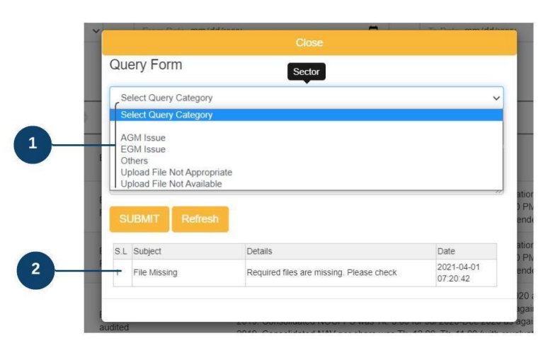
Fundamental
-
What is Fundamental Module?
The information of a company can be viewed and edited from this module. Initially DSE will set the fundamental information of a company. From this entry, the company can view information and also, they can edit possible fields. When a change request is made after editing information, it needs to be checked, verified and approved by the Issuer and then by DSE. When a change request is made then another change request can’t made, after approved by DSE can made change request. If you need more change request instantly then cancel your change request then made more changes request.
1. Changes list in a table
2. Input new change request
3. Upload documents, view information and query
4. Search from the table
5. Notification bar
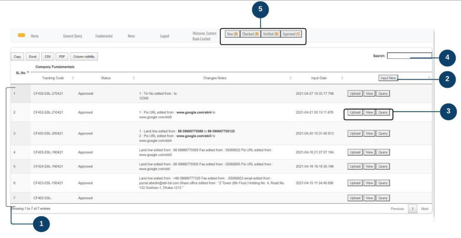 -
How to input new change request?
‘Input New’ button is used for editing information. When clicked, a form will be shown with the fields that can be changed. The user can edit as per requirement and save it. This will create a new request.
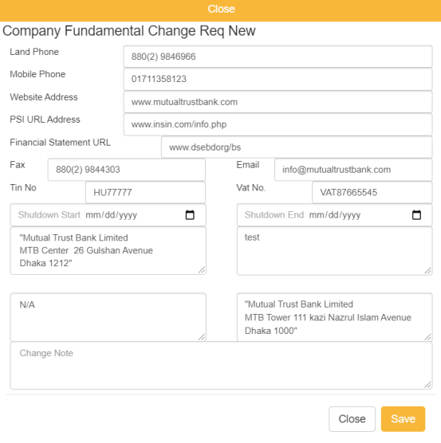 -
Why i am seeing New Request Not Possible Error
New changes cannot be made if there are pending change requests that are waiting for approval. If any request is pending then an error message will be displayed when the ‘Add New’ button is clicked.
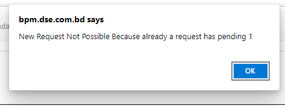
General Query
-
What is Query Module?
Any queries sent from DSE will be displayed here.
1. Query List
2. Upload documents, view information and query
3. Search from table
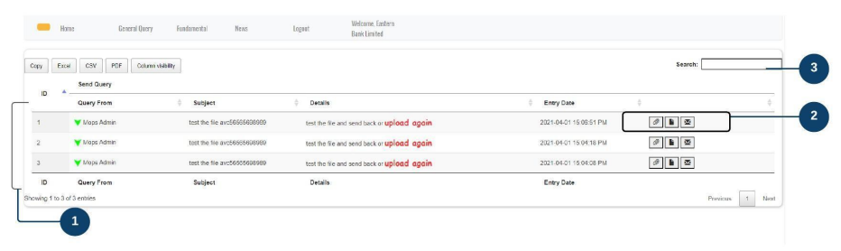
News
-
How to input news?
Click on [+] icon button. It will then pop-up News field.
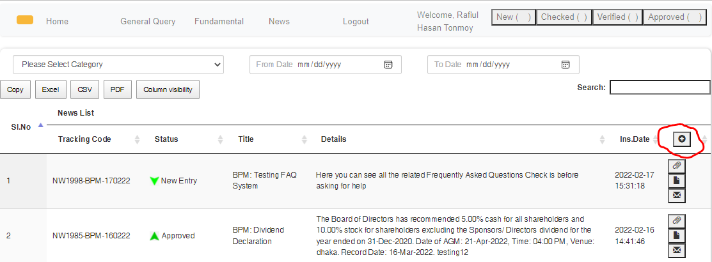
The user has to select a news category from the drop down box. For example, the user can choose Adoption Annual Audited FS 19(2) of LR
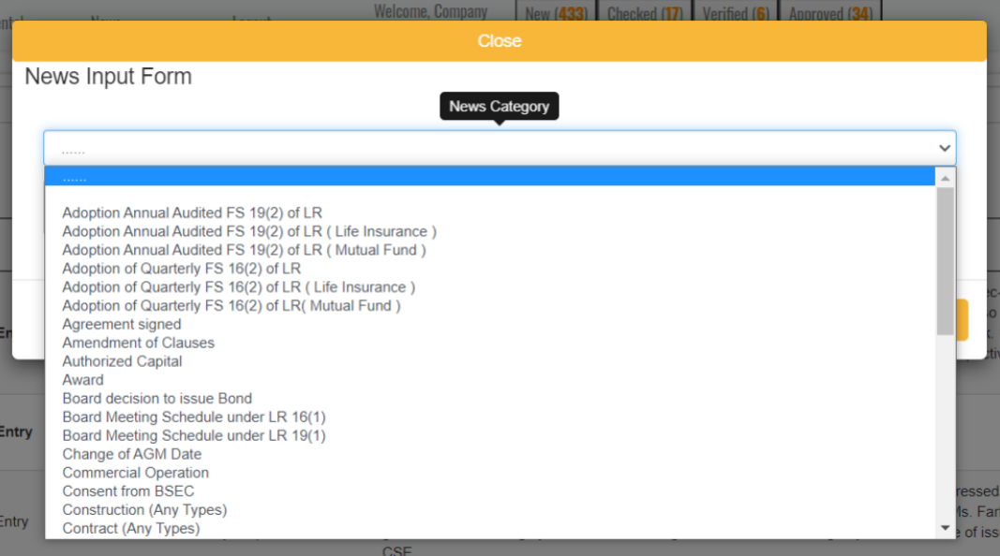
Then the particular template for that news will appear and the user has to input the values as per regulation. The regulations are defined in the News Regulations document
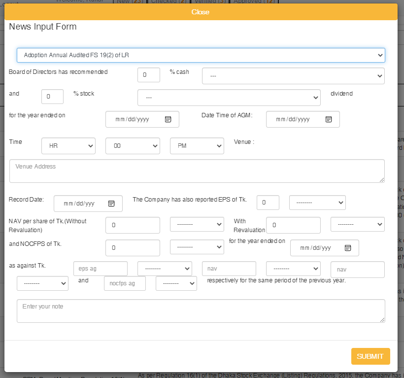
Insider
-
How to input new insider?
Click the Input New button. It will then pop-up Insider Form.
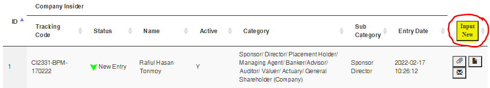
In this form, the user has to select the category of the insider.
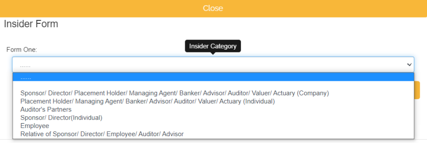
After the category is selected, the form will show the fields that need to be filled up providing the insider information.
1. This field has a dropdown box related to the category showing the sub-category. For example, in this category the subcategories are - Placement Holder, Managing Agent, Banker, Advisor, Auditor, Valuer, Actuary.
2. ‘Next’ button opens another form where the user has to provide the BO information.
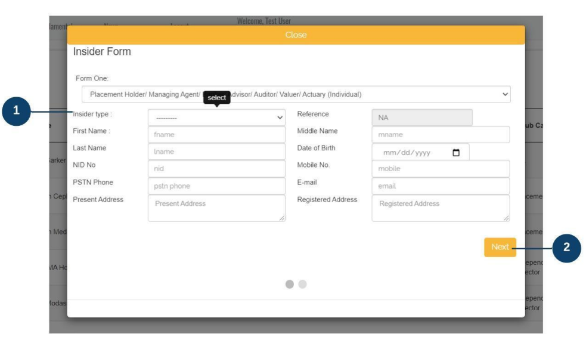
After filling up this document with correct information, the ‘Next’ button will open the BO form. BO ID should be given of 16 digits, and if it is less than 16 digits then it will be taken as Folio.
1. Add New BO ID : The user can add multiple BO account information for the insider. When this button is licked a similar additional block will be created below the first block.
2. Calculate : This will calculate total shares, total cost and average cost. 3. Previous : Clicking this button, the user will return to the previous form.
4. Submit : This button will submit all the information provided till now

-
How to Edit insider data?
You can edit your insider information until you approve it. But after approval, you can not edit it. So to do so, simply click on the file icon that is on the left side of your inputs.
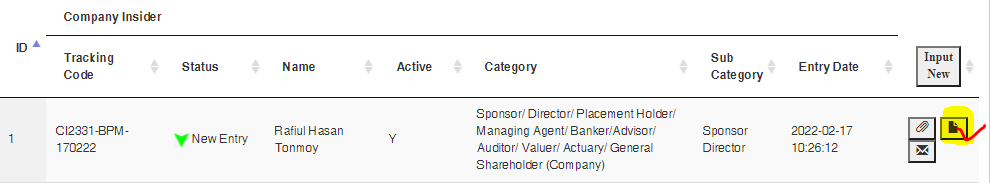
Click on update Content button for editing.
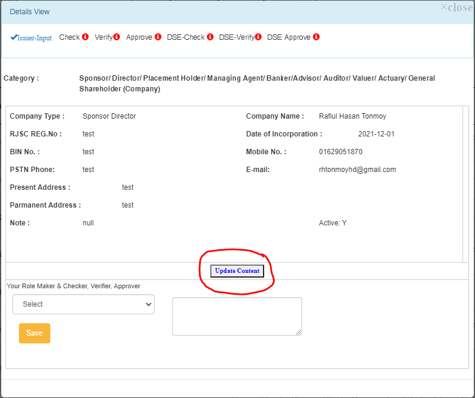 -
Can I add both BO and Folio at once
Currently, our system does not support both BO and Folio at once. That is why first you add your BO after that edit that insider input and add your Folio. In this way, you can input both BO and Folio.
-
How to delete input data from the insider module?
Click on the file icon that is on the left side of your inputs.
Now Select Cancel and Save
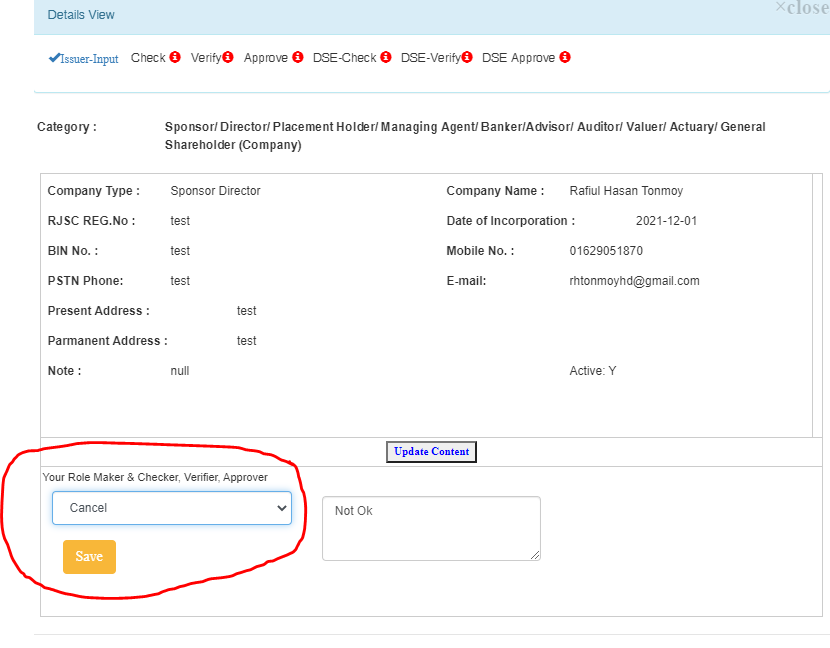
Declaration & Gift
-
What is Declaration & Gift Module?
After full process complete of insider, insider list will show in declaration.
From the sidebar menu if the user clicks ‘Declaration & Gift’, the declaration module will be shown.
1. Declaration List
2. Copy the information from the table or save as excel, csv, pdf.
3. Notification indicator that shows the count of new, checked, verified and approved news.
4. Search declaration by category or body or tracking code etc.
5. Input a new declaration
6. Upload file, query and view details
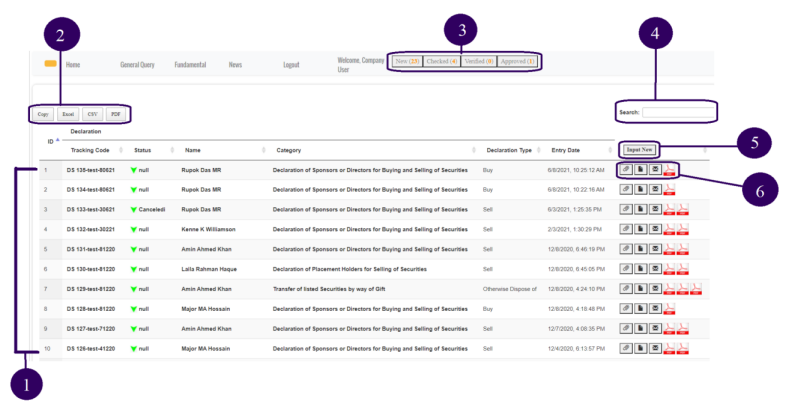 -
How to input Declaration?
The user has to select a declaration category from the drop down box. For example, the user can choose Declaration of Sponsors or Directors for Buying and Selling of Securities(Annexure-1 of Schedule B) .
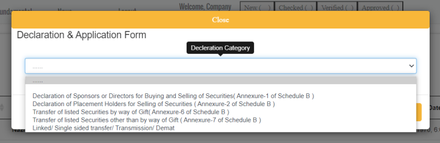
Then the particular template for that declaration will appear and the user has to input the values as per regulation. The regulations are defined in the Declaration Regulations document.
1. Select the declaration type like Buy, Sell, Otherwise dispose of, Recept of etc.
2. Select the type of market like Public , Block, others etc.
Then click on submit button
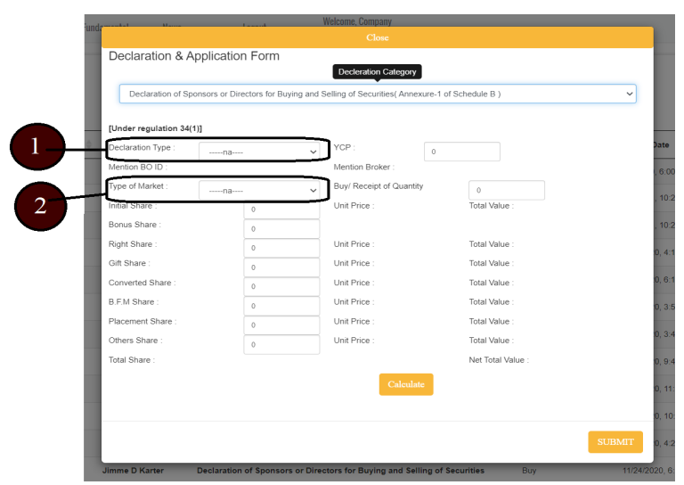
-
How to Confirm Declaration?
After full process complete of declaration, declaration list will show in declaration confirmation. From the sidebar menu if the user clicks ‘Declaration Confirmation’, the declaration confirmation module will be shown.
1. Declaration Confirmation List
2. Copy the information from the table or save as excel, csv, pdf.
3. Notification indicator that shows the count of new, checked, verified and approved news.
4. Search declaration confirmation by category or body or tracking code etc.
5. Input a new declaration confirmation
6. Upload file, query and view details
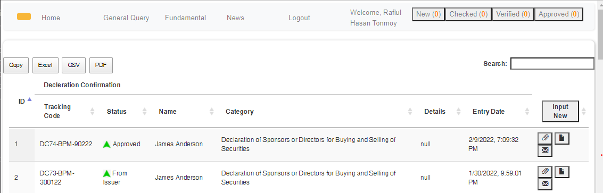
The user has to select a declaration list from the drop-down box
Then the particular template for that declaration confirmation will appear and the user has to input the values as per regulation
Periodical
-
What is Periodical Module?
The periodical details of the company can be entered from this module. There are some types of periodicals such as Quarterly Financials, Annual Financials, Annual Report, Audio Visual Recordings, Attendance, Minutes and Filings, Dividend Compliance Report, Monthly Shareholding Position, Free Float Reporting and Corporate Governance Guideline etc these include. The details are discussed below.
1. Periodical List.
2. Copy the information from the table or save as excel, csv, pdf.
3. Notification indicator that shows the count of new, checked, verified and approved news.
4. Any entry can be searched.
5. Input a new periodical.
6. Upload files, View details, Query and Report.
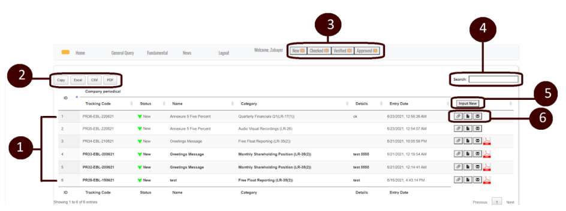 -
Periodical input history and status?
Each periodical entry will be displayed here. The title, Category, Details and date are also shown. Given below periodical categories.
1. Quarterly Financials Q1(LR-17(1)
2. Quarterly Financials Q2(LR-17(2))
3. Quarterly Financials @3(LR-17(3))
4. Annual Financials (LR-18)
5. Annual Report (LR-22)
6. Audio Visual Recordings (LR-26)
7. Attendance, Minutes and Filings (LR-27)
8. Attendance, Minutes and Filings (LR-28)
9. Dividend Compliance Report (LR-29)
10. Monthly Shareholding Position (LR-35(2))
11. Free Float Reporting (LR-35(2))
12. Corporate Governance Guideline (LR-36)
13. Others
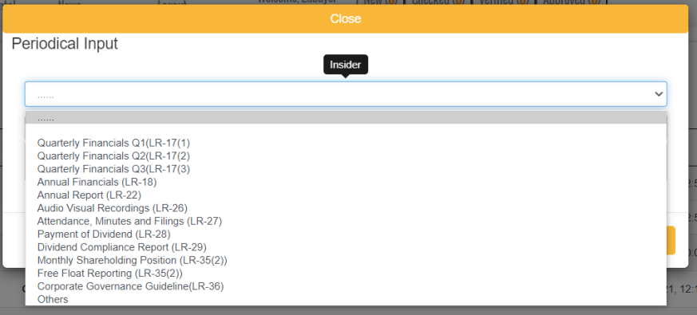
The user has to select a periodical category from the drop down box. For example, the user can choose ‘Quarterly Financials Q1(LR-17(1)’
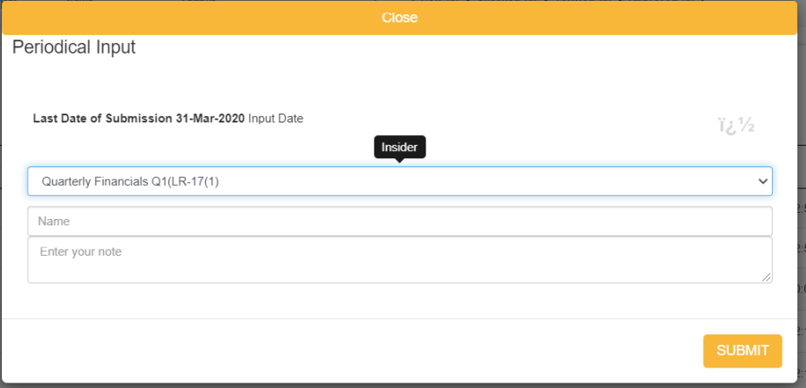
Input the valid data of the form. Then click the submit button.